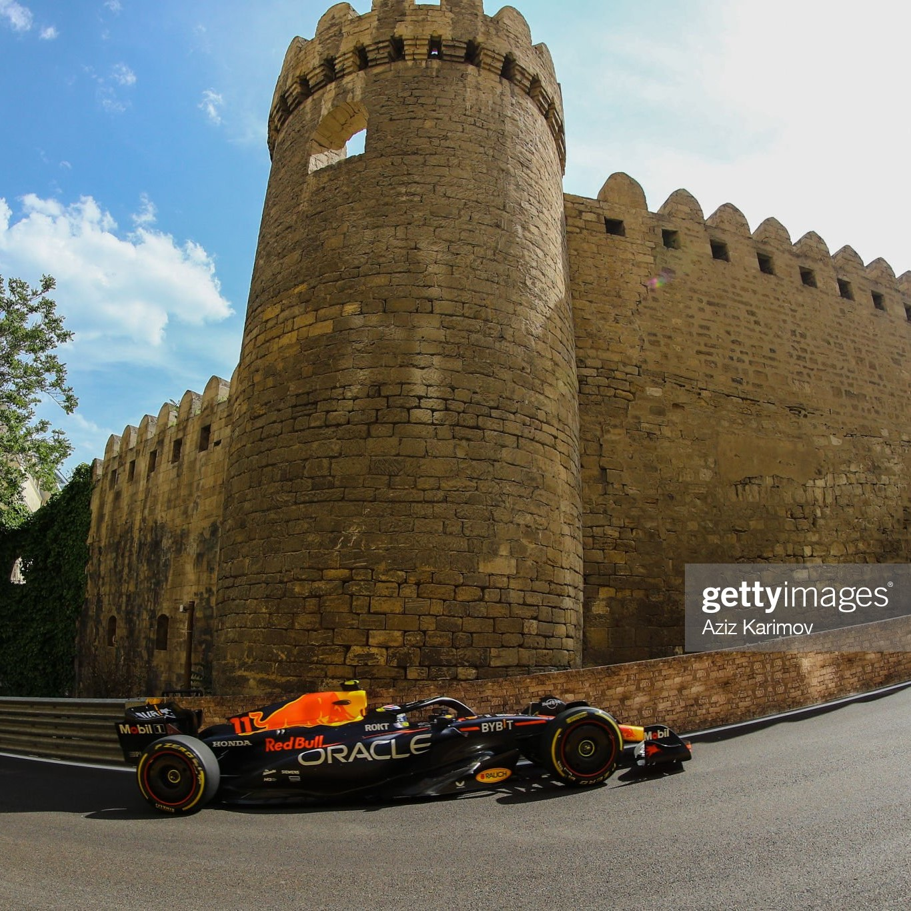

Foto: Getty Imagens
-30/04/2023-
Enfim, a corrida principal de Baku chegou e novamente Charles Leclerc largou na pole. Mas a alegria dos torcedores da Ferrari durou pouco: na volta quatro, quando foi permitida a abertura da asa móvel, Max Verstappen o ultrapassou sem nenhuma dificuldade. Sinceramente, parecia que o carro de Leclerc estava parado naquele momento. Logo em seguida, Sergio Perez imitou o movimento e assumiu a vice-liderança.
Quando tudo estava calmo - bem estilo Baku - e Perez já havia aberto distância suficiente para Leclerc não atacá-lo, Nyck De Vries (a minha decepção até o momento) encontrou o muro do estreito circuito e a quebra na suspensão traseira do seu Alpha o fez abandonar o GP em um ponto difícil da pista, causando bandeira amarela. Nesse momento, a Red Bull antecipou a parada e chamou o líder, Max Verstappen, para os boxes. No entanto, um erro ocorreu: em seguida, o safety car entrou na pista e ele acabou caindo para terceiro depois de algumas paradas nos boxes. Quem também foi prejudicado com a situação foi Lewis Hamilton, que nesse momento caiu para P10.
Quando finalmente retiraram o carro de De Vries da pista - novamente após muita demora - Perez relargou bem e Max não teve dificuldade em ultrapassar Leclerc novamente. E assim, naquele momento, o pódio estava definido, com o mexicano dominando a pista e Max com uma pilotagem limpa e sem erros, abrindo 21 segundos de um Leclerc apático e solitário. Alonso, por sua vez, após três pódios consecutivos, terminou em quarto lugar.
Lewis Hamilton, que relargou em décimo lugar após seis voltas, estava em sexto e assim terminou, atrás de Carlos Sainz. Fechando os dez primeiros tivemos Lance Stroll, que chegou a encostar no muro na mesma curva 5 que tirou De Vries, em sétimo lugar; George Russell, que conquistou a melhor volta aos 48 minutos do segundo tempo em P8; Lando Norris, com uma McLaren que começou a demonstrar uma melhora em P9 lugar; e Yuki Tsunoda em P10.
Após Perez abrir a última volta, Esteban Ocon, que deixou para entrar nos boxes na volta 51, encontrou alguns pedestres pelo caminho. A equipe da F1 estava literalmente na entrada dos boxes pronta para comemorar o pódio e o final da corrida.
Com isso, o mexicano termina o final de semana a apenas seis pontos de seu companheiro de equipe. Será que estamos vendo um novo 2016 se desenrolar?
A próxima corrida é a emocionante Miami, que este ano finalmente terá uma marina verdadeira e quem sabe alguma emoção.
Colocação Final do GP do Azerbaijão.

Informações: Fórmula 1